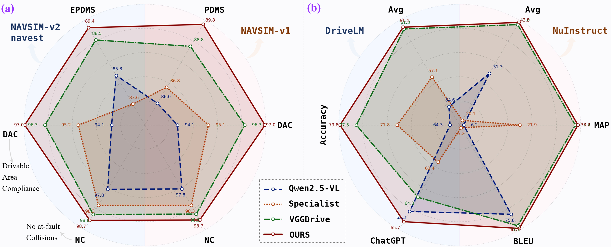
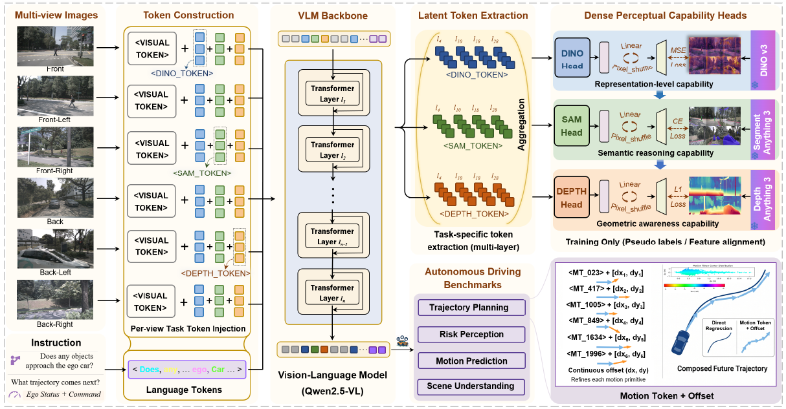
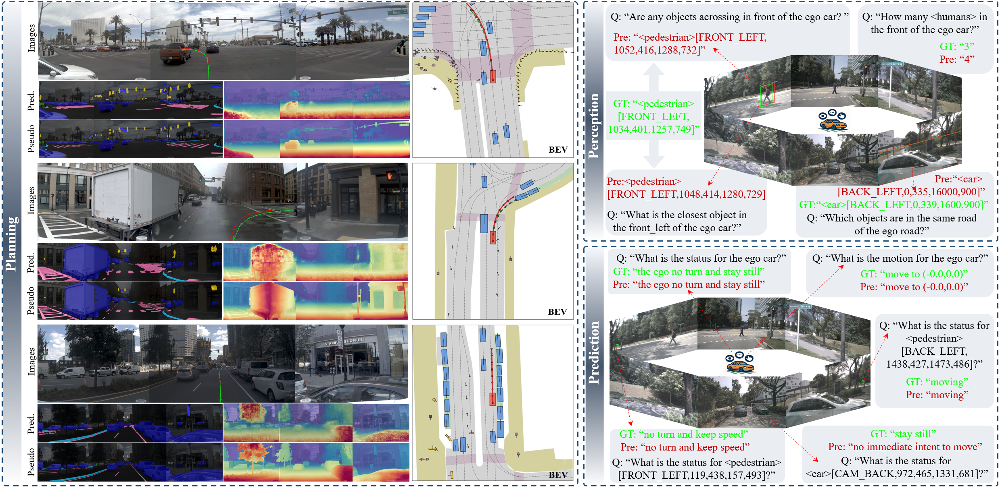
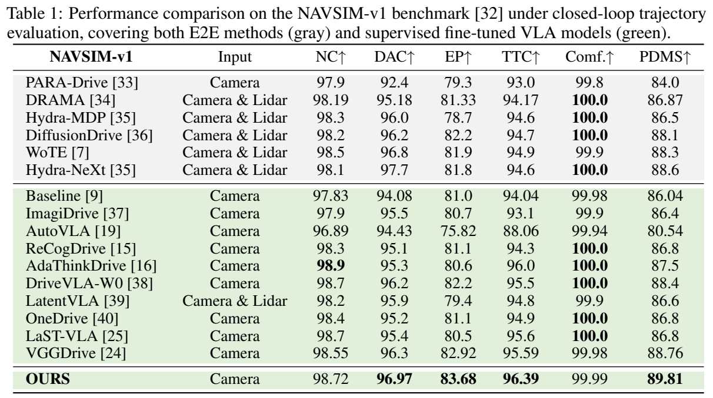
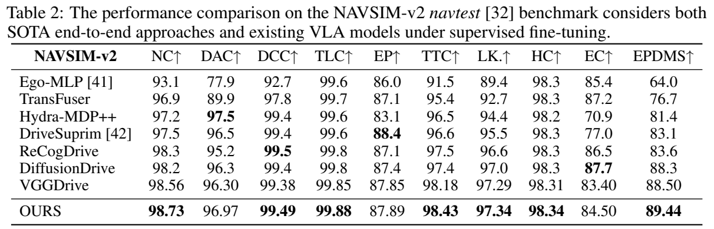
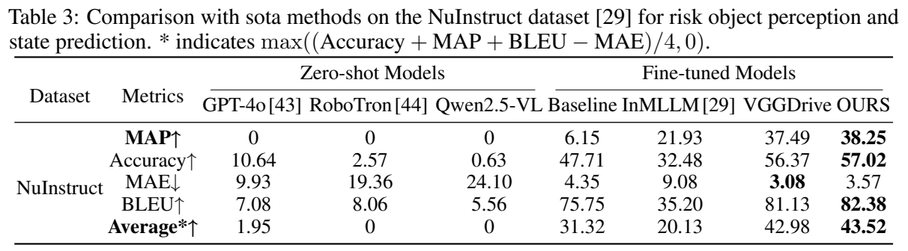
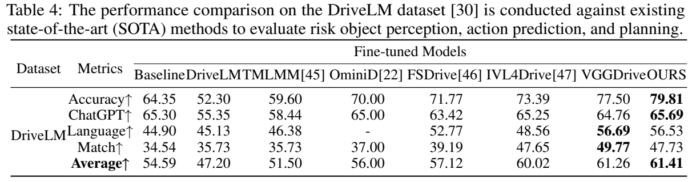

A small interface to dense knowledge
Inject task-specific DINO, SAM and depth tokens after each view’s visual tokens. Aggregate their hidden states across VLM layers to preserve complementary information.
NEURIPS 2026
LECDrive
Latent Expert Cognitive Chains for
Vision-Language-Action Autonomous Driving
1 School of Artificial Intelligence, Shanxi University2 School of Artificial Intelligence, Tianjin University3 Xiaomi EV
† Corresponding author
Autonomous driving requires a rich understanding of visual appearance, semantic structure and spatial geometry. Yet conventional vision-language-action models learn to map dense, multi-view observations to sparse language responses or trajectory points. This mismatch can discard scene details that matter for driving but receive little direct supervision. We argue that a central limitation is the lack of an explicit mechanism that encourages VLAs to build structured world representations before generating actions.
LECDrive introduces “Think Densely, Act Sparsely”: build accurate, rich and structured world understanding in the latent space before producing sparse driving actions. Inspired by hierarchical human perception, it embeds a progressive Latent Expert Cognitive Chain within the VLA, guiding the model from visual representation to semantic understanding and spatial geometry.
Experiments demonstrate improvements across trajectory planning, language-driven perception and prediction, supporting the value of dense world understanding across driving tasks. Sparse actions can be grounded in a rich internal understanding of the driving world.
Figure 2. Quantitative comparison across planning, perception and prediction benchmarks.
Experiments demonstrate improvements across trajectory planning, language-driven perception and prediction, supporting the value of dense world understanding across driving tasks.
Sparse actions can be grounded in a rich internal understanding of the driving world.

Representation. Semantics. Geometry.

Inject task-specific DINO, SAM and depth tokens after each view’s visual tokens. Aggregate their hidden states across VLM layers to preserve complementary information.
Internalize knowledge from DINOv3, SAM3 and DepthAnything3 through lightweight prediction heads and structured expert supervision.
Retrieve discrete motion primitives and refine them with continuous offsets, combining structured action generation with precise trajectory prediction.

LECDrive improves trajectory planning, risk perception and state prediction across NAVSIM, NuInstruct and DriveLM.





@inproceedings{wang2026lecdrive,
title = {Think Densely, Act Sparsely: Latent Expert Cognitive Chains for Vision-Language-Action Autonomous Driving},
author = {Wang, Jie and Li, Guang and Huang, Zhijian and Li, Jinlong and Dang, Chenxu and Ye, Hangjun and Han, Yahong and Chen, Long},
booktitle = {Advances in Neural Information Processing Systems},
year = {2026}
}